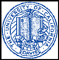

Lab for Data Intensive Biology at UC Davis Joins Software Carpentry as an Affiliate
We are pleased to announce that the Laboratory for Data Intensive Biology at UC Davis has joined the Software Carpentry Foundation as an Affiliate Member for three years starting in 2015. "We've been long-term supporters of Software Carpentry, and Affiliate status lets us support the Software Carpentry Foundation in a tangible way," said Dr. C. Titus Brown, the lab director. "This status also gives us the opportunity to include Software Carpentry as part of a larger biological data science training program at UC Davis."

Software Carpentry is a volunteer organisation whose goal is to make scientists more productive, and their work more reliable, by teaching them basic computing skills. Founded in 1998, it runs short, intensive workshops that cover program design, version control, testing, and task automation. In October 2014, a non-profit Software Carpentry Foundation was created to act as a governing body for the project. Affiliate status with the SCF provides preferential access to instructor training as well as waiving per-workshop fees.
The Laboratory for Data Intensive Biology (DIB) started in January 2015 with Dr. Brown's move to UC Davis. The lab is in the Department of Population Health and Reproduction in the School of Veterinary Medicine, and is part of both the Data Science Initiative and the Genome Center at UC Davis. DIB does fundamental and applied research on making use of the increasing volume and variety of biological data, and Dr. Brown currently has funding from the NIH and the Moore Foundation.
For more information, please see this announcement by Dr. Brown.